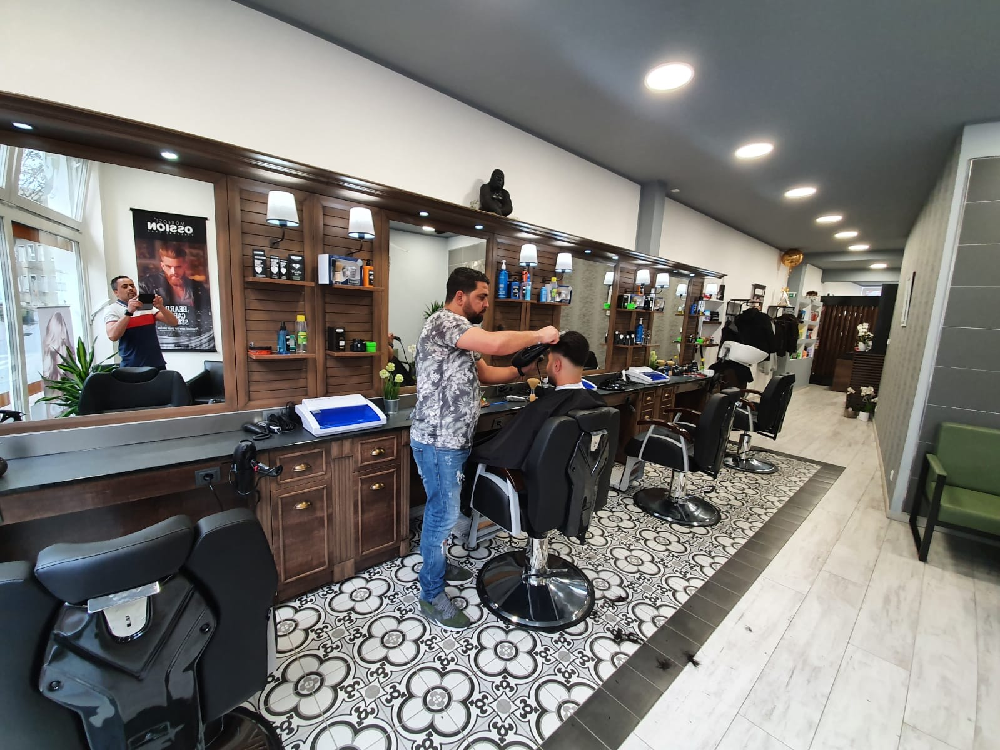
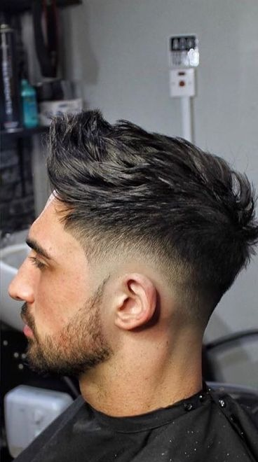
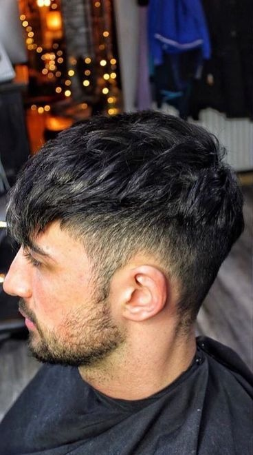
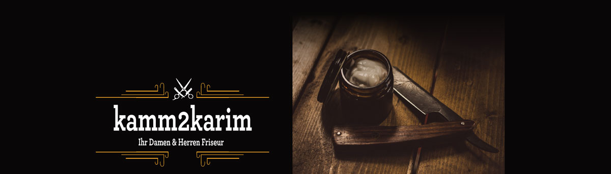
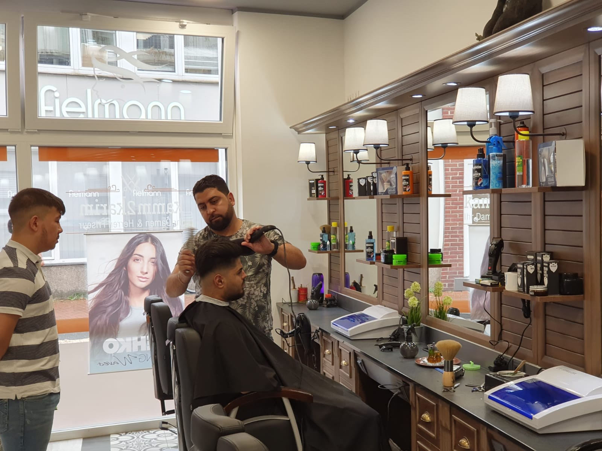
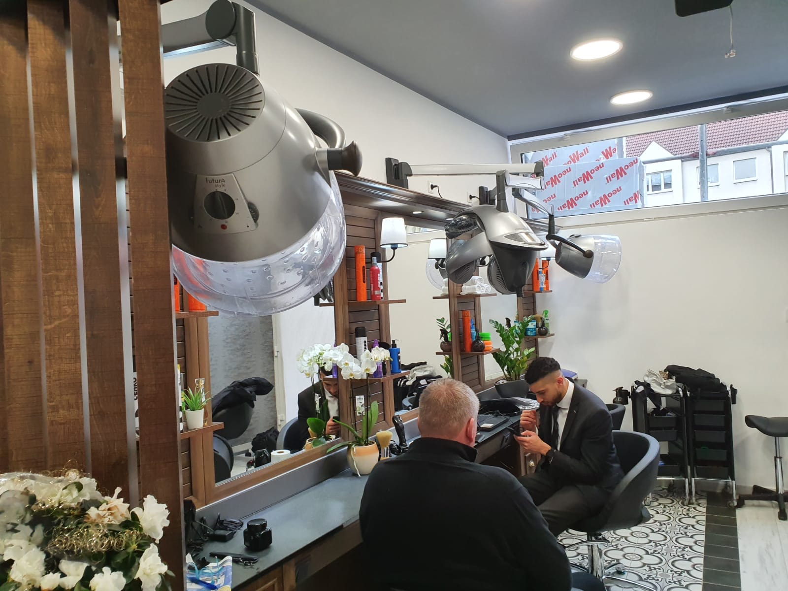
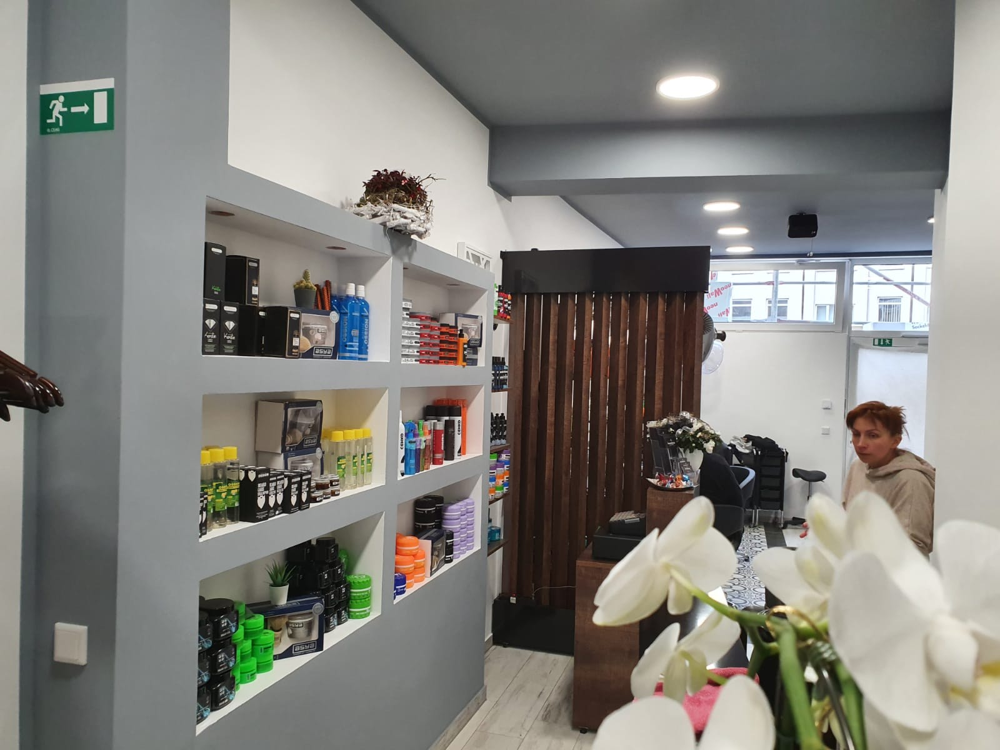

Kamm2Karim · Ritterstraße 32, Hamm
Der Nächste, bitte.
Ein Rundgang durch Ihren nächsten Friseurbesuch, für Damen und Herren.
oder einfach scrollen
Der Besuch · Kapitel 1 — Das Handwerk
Präzision, die man sieht.
Fade, Schnitt, Bart: Bei Karim und seinem Team sitzt jeder Übergang, sagen 135 Google-Bewertungen mit 4,8 Sternen.

Die Anatomie eines sauberen Fades.
- Die MaschineSkin Fade: von der Null aufwärts, Millimeter für Millimeter aufgebaut.
- Die SchereDeckhaar mit Struktur, auf Ihren Kopf geschnitten. Es fällt, wie es fallen soll.
- Die KonturStirn, Schläfe, Nacken: Kanten wie gezogen.
- Der BartVom Fade in die Bartkontur: ein Übergang, keine Kante.
Scrollen Sie weiter: Jeder Schritt zeigt, wo am Kopf er entschieden wird.
Gleicher Stuhl. Neuer Auftritt.
So zeigt die Seite später Ihre eigenen Verwandlungen, hier mit Beispielbildern. Den Vergleich zieht Ihr Scroll.

Die Karte für Herren.
Klassisch bezahlbar, vom Maschinenschnitt bis zur heißen Rasur.
Beispielpreise aus der Vorbereitung: Sie werden vor dem Livegang gemeinsam mit dem Salon final eingetragen.


Der Besuch · Kapitel 2 — Die Damen
Und die Damen?
Gleiche Präzision, eigene Welt: Schnitt, Farbe, Föhnen und Styling, im selben Salon.

Damen bei Kamm2Karim
Schnitt. Farbe. Fertig schön.
Vom Kurzhaarschnitt bis zu Foliensträhnen und Hochstecken, mit einer Beratung, die erst zuhört und dann schneidet.
Schnitt & Styling
Farbe & Feines
Ab-Preise laut Salon-Aushang, je nach Haarlänge und Aufwand.

Was Hamm über den Salon sagt
„Ich bin seit über einem Jahrzehnt Kunde bei Karim — und das sagt eigentlich schon alles. In all den Jahren hat er sich kein einziges Mal verschnitten. […] Für mich ganz klar der Friseur meines Vertrauens."
„Noch nie hat ein Friseur hier meine Frisur versaut. […] Auf jeden Fall der beste Friseursalon, den ich in meinem ganzen Leben besucht habe — und vermutlich auch der beste in ganz Hamm."
„Der Mitarbeiter Ahmed leistet sehr gute Arbeit, ist sehr hilfsbereit, sehr schnell und sehr höflich. Er hat eine Beförderung verdient."
Ein Salon. Zwei Welten.
Damen & Herren, mitten in Hamm: Termin am Telefon oder einfach per WhatsApp schreiben, das Team meldet sich.